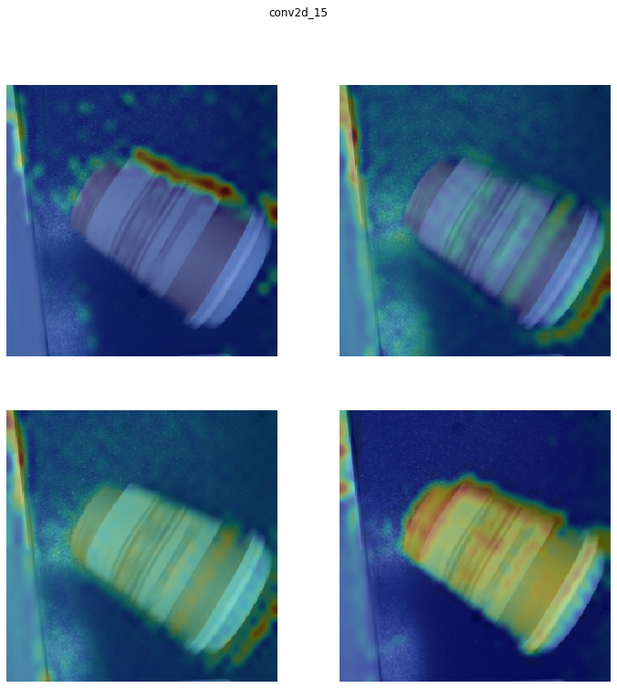
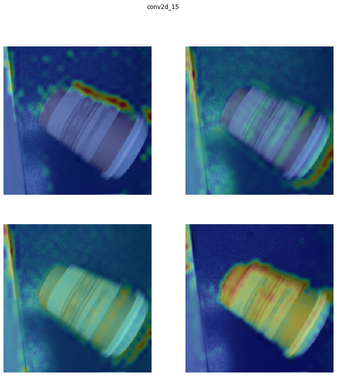

Projects
I like to work on personal programming projects in my free time. These are all viewable on my GitHub.
Recycle Bot
Using machine learning to sort trash from recyclables on the Raspberry Pi 4.

I achieved the best results using Convolutional Neural Networks and Support Vector Machines. A visualization of a forward pass through the neural network as well as a heatmap of the pixels that activated the final convolutional layer can be viewed below:
 

I used Principal Component Analysis to project the data onto 3 dimensions and found a linear hyperplane that separates the two classes with 99.2% accuracy.

Generative Adversarial Networks
Generating cats and anime style faces using Deep Convolutional GANs. Interpolated sampling through the latent space of the generative model is visualized below: